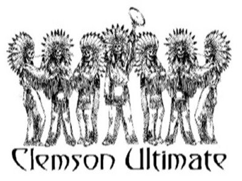

History
The Joint Chiefs of Waft date back to 1976 at Clemson University. The club became officially recognized by the university in 1978. Being one of the oldest programs in the South, the Joint Chiefs have built a winning tradition that they hope will carry them to their first ever college nationals. Above all else this team believes in the tradition and spirit that has always been part of the Joint Chiefs. No matter what happens we try to keep in mind that ultimate is a team sport, and we play to have fun. After a strong finish at the end of November, we hope to carry the momentum into the spring.

Home